Research
circle ◌ me...
------------ ㄨ me out?
--------------------------------- maybe doodle a ♡ !
ㄨㄨㄨㄨㄨㄨ [double click] to CLEAR ㄨㄨㄨㄨㄨㄨㄨㄨㄨㄨㄨ
⠀⠀⠀⠀⠀⠀⠀⠀⠀⠀⠀⠀⠀⠀⠀⠀⠀⠀⠀⠀⠀⠀⠀⠀⠀⠀⠀⠀⠀⠀⠀⠀⠀⠀⠀⠀⠀⠀⠀⠀⠀⠀⠀⠀⠀⠀⠀⠀⠀⠀
⠀⠀⠀⠀⠀⠀⠀⠀⠀⠀⠀⠀⠀⠀⠀⠀⠀⠀⠀⠀⠀⠀⠀⠀⠀⠀⠀⠀⠀⠀⠀⠀⠀⠀⠀⠀⠀⠀⠀⠀⠀⠀⠀⠀⠀⠀⠀⠀⠀⠀
⠀⠀⠀⠀⠀⠀⠀⠀⠀⠀⠀⠀⠀⠀⠀⠀⢀⣀⣤⣴⣶⣿⣿⣿⣶⣶⣶⣶⣶⣶⣤⣤⣤⣀⡀⠀⠀⠀⠀⠀⠀⠀⠀⠀⠀⠀⠀⠀⠀⠀
⠀⠀⠀⠀⠀⠀⠀⠀⠀⠀⠀⠀⠀⢀⣤⣾⣿⣿⡿⠿⠛⠋⠉⠉⠉⠛⠛⠛⠛⠛⠻⠿⠿⣿⣿⣶⣄⠀⠀⠀⠀⠀⠀⠀⠀⠀⠀⠀⠀⠀
⠀⠀⠀⠀⠀⠀⠀⠀⠀⠀⠀⢀⣴⣿⣿⠟⠋⠁⠀⠀⠀⠀⠀⠀⠀⠀⠀⠀⠀⠀⠀⠀⠀⠈⠙⢿⣿⣷⣄⠀⠀⠀⠀⠀⠀⠀⠀⠀⠀⠀
⠀⠀⠀⠀⠀⠀⠀⠀⠀⢀⣴⣿⣿⠏⠁⠀⠀⠀⠀⢀⣠⣤⣴⣶⣶⣶⣶⣶⣶⣦⣤⣄⡀⠀⠀⠀⠙⢿⣿⣧⡀⠀⠀⠀⠀⠀⠀⠀⠀⠀
⠀⠀⠀⠀⠀⠀⠀⠀⢀⣿⣿⡿⠃⠀⠀⠀⢀⢠⣼⣿⣿⣿⡿⠿⠿⠿⠿⠿⠿⢿⣿⣿⣿⣧⣄⡀⠀⠀⠸⣿⣿⡄⠀⠀⠀⠀⠀⠀⠀⠀
⠀⠀⠀⠀⠀⠀⠀⢠⣿⣿⠟⠀⠀⠀⢀⣴⣿⡿⠛⠉⠁⠀⠀⠀⠀⠀⠀⠀⠀⠀⠀⠀⠉⠙⠻⣿⣦⣄⠀⠈⠟⢿⣦⠀⠀⠀⠀⠀⠀⠀
⠀⠀⠀⠀⠀⠀⢠⣿⣿⠃⠀⠀⢀⣴⣿⡿⠁⠀⠀⠀⠀⠀⠀⣀⣀⣤⣤⣶⣶⣶⣶⣶⣤⣄⡀⠀⠙⢿⣷⡄⠀⠈⠁⠀⠀⠀⠀⠀⠀⠀
⠀⠀⠀⠀⠀⢀⣿⣿⠏⠀⠀⢀⣾⣿⠇⠀⠀⠀⢀⣠⣴⣶⡿⠟⠛⠛⠉⠉⠁⠀⠈⠉⠻⣿⣿⣆⠀⠈⢻⣿⣄⠀⠀⠀⠀⠀⠀⠀⠀⠀
⠀⠀⠀⠀⠀⣾⣿⡟⠀⠀⢀⣾⣿⠏⠀⠀⠀⣼⣿⣿⠛⠁⠀⢀⣀⣀⣀⣀⠀⠀⠀⠀⠀⠙⣿⣿⣆⠀⠀⢻⣿⣆⠀⠀⠀⠀⠀⠀⠀⠀
⠀⠀⠀⠀⢸⣿⣿⠁⠀⠀⣨⣿⡿⠀⠀⠀⢀⣼⡟⠀⠀⢠⡾⠋⠉⠉⠙⢿⣿⡄⠀⠀⠀⠀⠘⣿⣿⡀⠀⠀⣿⣿⡄⠀⠀⠀⠀⠀⠀⠀
⠀⠀⠀⠀⢘⣿⣿⠀⠀⠀⣿⣿⣧⠀⠀⠀⠈⣾⡇⠀⠀⣺⠁⠀⠀⢲⡄⠀⠩⣿⠀⠀⠀⠀⠀⣼⣿⡇⠀⠀⣿⣿⡇⠀⠀⠀⠀⠀⠀⠀
⠀⠀⠀⠀⢸⣿⣿⠀⠀⠀⣿⣿⣿⠀⠀⠀⠀⠩⣷⡄⠀⠘⣄⠀⣠⡾⠁⠀⣠⣿⡇⠀⠀⠀⢀⣿⣿⠇⠀⢠⣿⣿⡇⠀⠀⠀⠀⠀⠀⠀
⠀⠀⠀⠀⠘⢿⣿⡄⠀⠀⢹⣿⣿⡄⠀⠀⠀⠀⠘⠿⣦⣀⠀⠉⠀⠀⣠⣼⣿⡿⠀⠀⠀⠀⢘⣿⡿⠀⠀⢸⣿⣿⠃⠀⠀⠀⠀⠀⠀⠀
⠀⠀⠀⠀⠀⢻⣿⣇⠀⠀⠀⢻⣿⣿⣄⠀⠀⠀⠀⠀⠈⠻⣿⣿⣿⣿⠿⠟⠋⠀⠀⠀⢀⣴⣿⣿⠃⠀⢠⣿⣿⡇⠀⠀⠀⠀⠀⠀⠀⠀
⠀⠀⠀⠀⠀⠈⢿⣿⣧⠀⠀⠀⠻⣿⣿⣦⡀⠀⠀⠀⠀⠀⠀⠀⠀⠀⠀⠀⠀⠀⢀⣤⣾⣿⣿⠋⠀⢀⣾⣿⡟⠀⠀⠀⠀⠀⠀⠀⠀⠀
⠀⠀⠀⠀⠀⠀⠀⢻⣿⣷⡀⠀⠀⠈⠻⢿⣿⣷⣦⣄⣀⠀⠀⠀⠀⠀⠀⣀⢠⣶⣿⣿⠟⠉⠀⠀⢀⣺⣿⡟⠀⠀⠀⠀⠀⠀⠀⠀⠀⠀
⠀⠀⠀⠀⠀⠀⠀⠀⠙⣿⣿⣦⠀⠀⠀⠀⠈⠋⢻⣿⣿⣿⣷⣶⣶⣾⣿⣿⣿⠛⠁⠀⠀⠀⠀⢠⣿⣿⡟⠀⠀⠀⠀⠀⠀⠀⠀⠀⠀⠀
⠀⠀⠀⠀⠀⠀⠀⠀⠀⠙⢿⣿⣿⣦⣤⡀⠀⠀⠀⠈⠉⠉⠉⠉⠛⠛⠋⠉⠀⠀⠀⠀⠀⣠⣴⣿⣿⡟⠁⠀⠀⠀⠀⠀⠀⠀⠀⠀⠀⠀
⠀⠀⠀⠀⠀⠀⠀⠀⠀⠀⠀⠈⠙⠻⢿⣿⣿⣦⣄⡀⠀⠀⠀⠀⠀⠀⠀⠀⠀⠀⣀⣴⣾⣿⣿⠟⠁⠀⠀⠀⠀⠀⠀⠀⠀⠀⠀⠀⠀⠀
⠀⠀⠀⠀⠀⠀⠀⠀⠀⠀⠀⠀⠀⠀⠀⠙⠻⢿⣿⣿⣿⣶⣶⣤⣤⣤⣤⣴⣶⣾⣿⣿⠟⠋⠁⠀⠀⠀⠀⠀⠀⠀⠀⠀⠀⠀⠀⠀⠀⠀
⠀⠀⠀⠀⠀⠀⠀⠀⠀⠀⠀⠀⠀⠀⠀⠀⠀⠀⠈⠉⠛⠿⠿⣿⣿⣿⡿⠿⠿⠛⠉⠀⠀⠀⠀⠀⠀⠀⠀⠀⠀⠀⠀⠀⠀⠀⠀⠀⠀⠀
⠀⠀⠀⠀⠀⠀⠀⠀⠀⠀⠀⠀⠀⠀⠀⠀⠀⠀⠀⠀⠀⠀⠀⠀⠀⠀⠀⠀⠀⠀⠀⠀⠀⠀⠀⠀⠀⠀⠀⠀⠀⠀⠀⠀⠀⠀⠀⠀⠀⠀
⠀⠀⠀⠀⠀⠀⠀⠀⠀⠀⠀⠀⠀⠀⠀⠀⠀⠀⠀⠀⠀⠀⠀⠀⠀⠀⠀⠀⠀⠀⠀⠀⠀⠀⠀⠀⠀⠀⠀⠀⠀⠀⠀⠀⠀⠀⠀⠀⠀⠀

facebook' is an interactive installation that uses facial recognition technology to track the reader's personal data through multiple search engines, filling in a narrative template on its back-end to develop, in real time, a story tailored to the individual. It comprises of a physical book and two web cameras, one that tracks the user's page flipping motion, to project new content onto each new spread, and a second which constantly traces their face to derive data to be injected into the story. Depending on the user, details of the storyline will be completely different, including their name, age, occupation, location and relationships. Created in "dialogue with big brother", the work examines the role of social media, the digital footprint, data privacy.


An ongoing collection of works that uses machine learning and AI to produce live image interpretations of the real world, through filters of its learned image dataset. The result is these dream-like artistic interpretations of mundane reality, making us question how we make sense of the world, our own consciousness influenced by expectations and existing beliefs. I found the creative and philosophical application of ML and AI especially refreshing, as it urged me to consider future implications of such technology on the way we experience the world.


"Inspired by biology, ecology, and the underlying mathematics of the natural world, New Nature is an ever-unfolding digital world of speculative creatures and landscapes." Installed at ARTECHOUSE in Washington, DC, from October 2018 - January 2019, New Nature was a digital world of creatures, powered by complex algorithms to mimic the lifelike behaviours of the natural world. These alien organisms detect and respond to audience interactions including touch, approach and movement. The full exhibition comprised four rooms, surround projections, LED structures, responsive floors and 13 interactive terrarium stations. This inspired me to further examine how digital media can creatively reflect and potentially immortalise aspects of nature.

Interactivities
A couple simple experimental p5.js sketches to familiarise with using Processing.


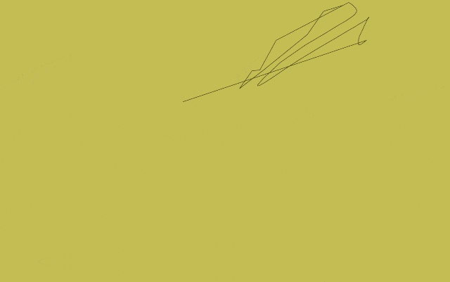
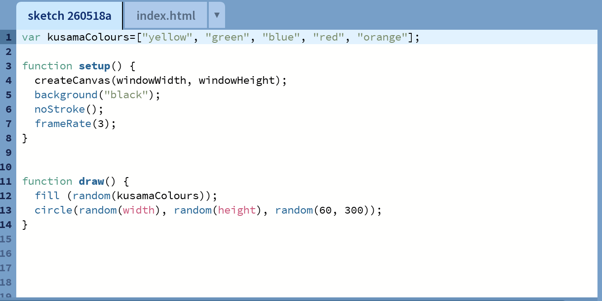
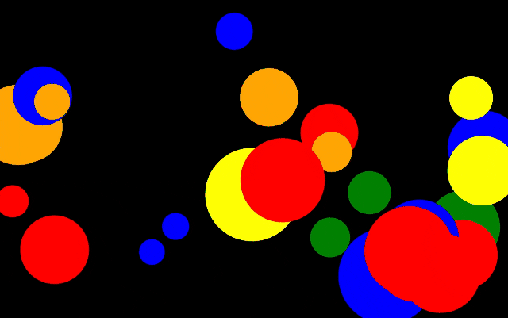
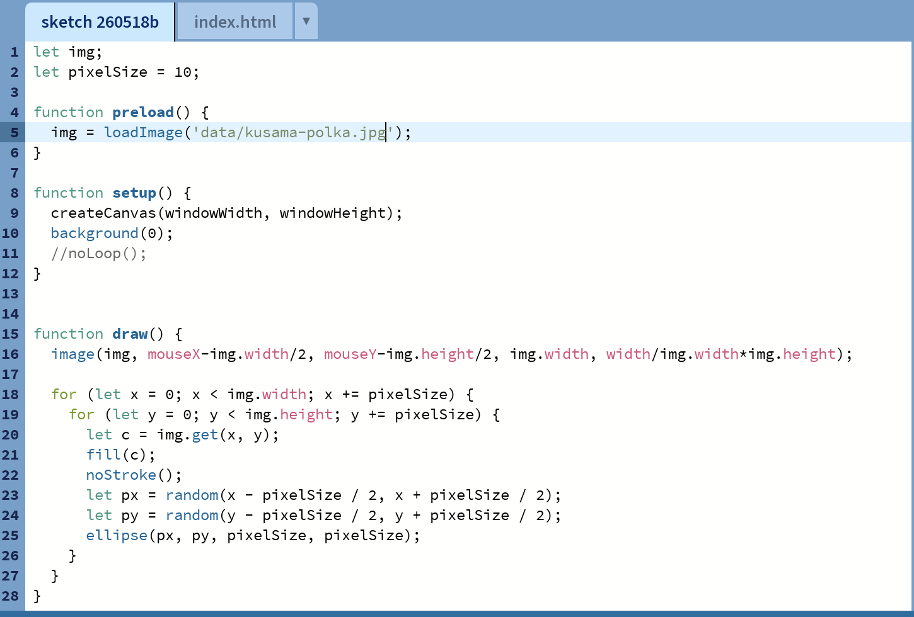
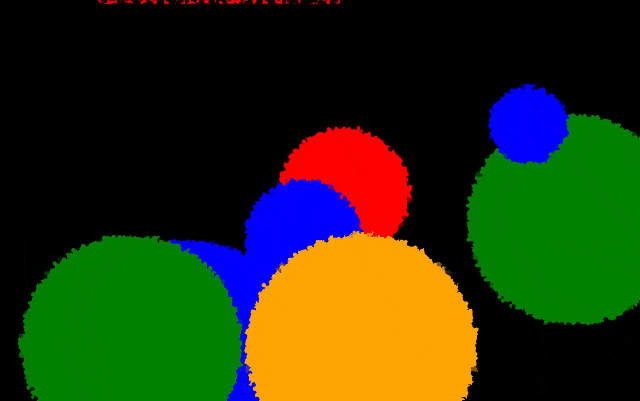
Experiments
selfPortrait.js
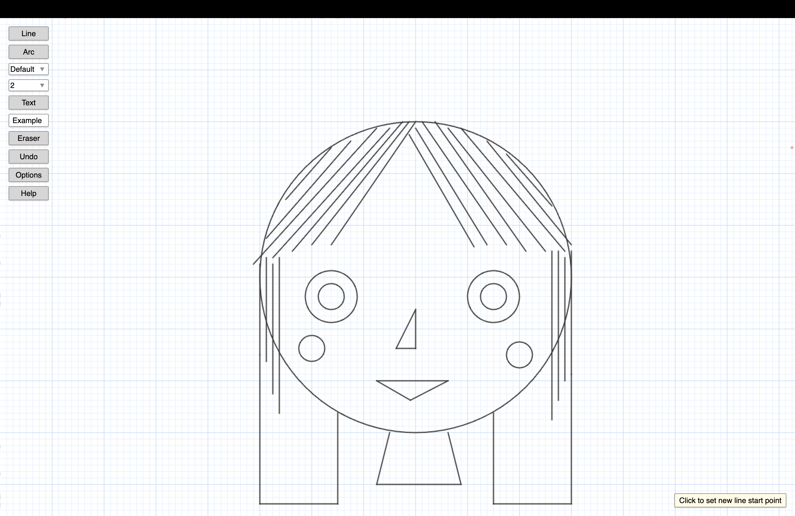
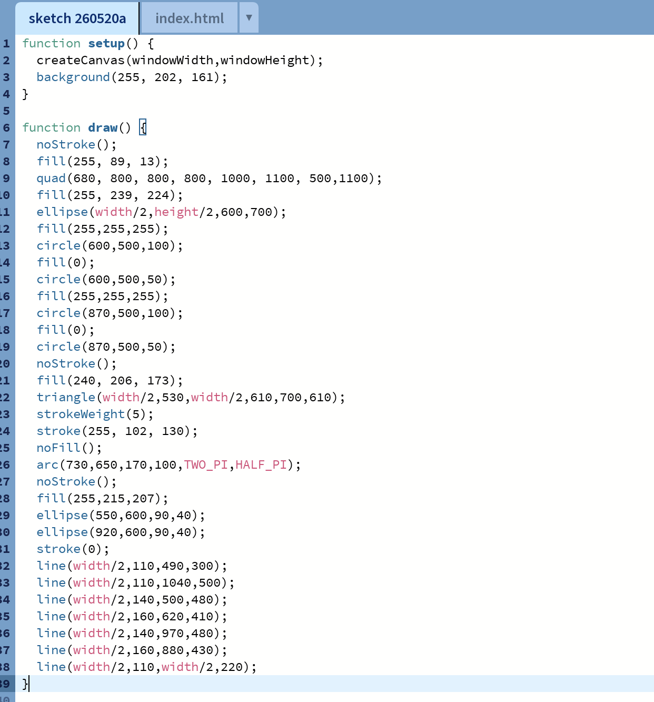
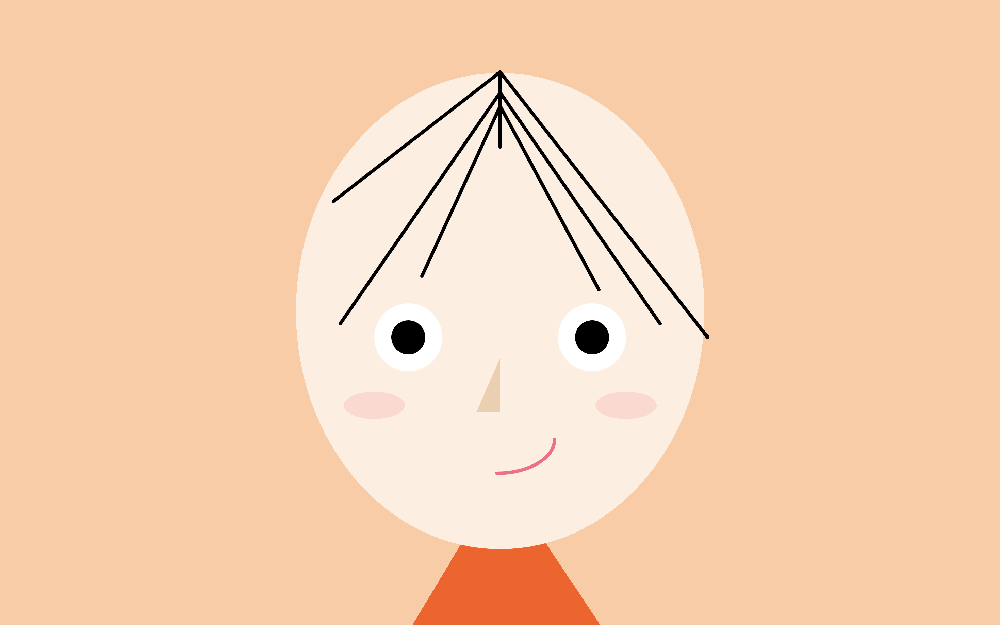
12HR Challenge: Slave to the Algorithm
| Time | Activity | Prompt | Result |
|---|---|---|---|
| 9:00 | Wake up | 7♣ → 7 min movement | Quick stretch + light yoga |
| 9:15 | Breakfast | Dice 2 → Simple meal | Toast + eggs |
| 9:45 | Study block | 5♠ → 50 mins / Dice 4 → Essay | Decent progress on essay draft |
| 10:35 | Break | Heads → Stay productive | Cleaned desk |
| 11:00 | Task | Q♦ → 12 min leisure / Dice 1 → Familiar | Comfort episode |
| 11:20 | Study block | Dice 6 → Hardest subject | Avoided readings (painful but useful) |
| 12:15 | Lunch | 3♥ → Light meal / Tails → Order | Ordered something small |
| 1:00 | Post-lunch | Dice 5 → Go outside | Short walk |
| 1:40 | Workout | 9♣ → 18 mins / Dice 3 → Jog | Light run |
| 2:15 | Shower + reset | Heads → Quick routine | Didn't over-procrastinate skincare |
| 2:45 | Study block | 8♠ → 80 mins / Dice 2 → Review notes | Consolidated lecture content |
| 4:05 | Snack | Dice 1 → Healthy | Fruit instead of junk |
| 4:20 | Leisure | 6♦ → 30 mins / Tails → New content | Started a new show |
| 5:00 | Task switch | Dice 4 → Creative | Brainstormed project ideas |
| 6:00 | Dinner | K♥ → Big meal / Heads → Cook | Made a proper dinner |
| 7:00 | Evening | Dice 2 → Low-energy | Watched Netflix |
| 8:00 | Productivity push | 4♠ → 40 mins / Dice 3 → Editing | Cleaned up essay draft |
| 8:45 | Wind down | Heads → No phone | Read a book |
drawSnoopy.js
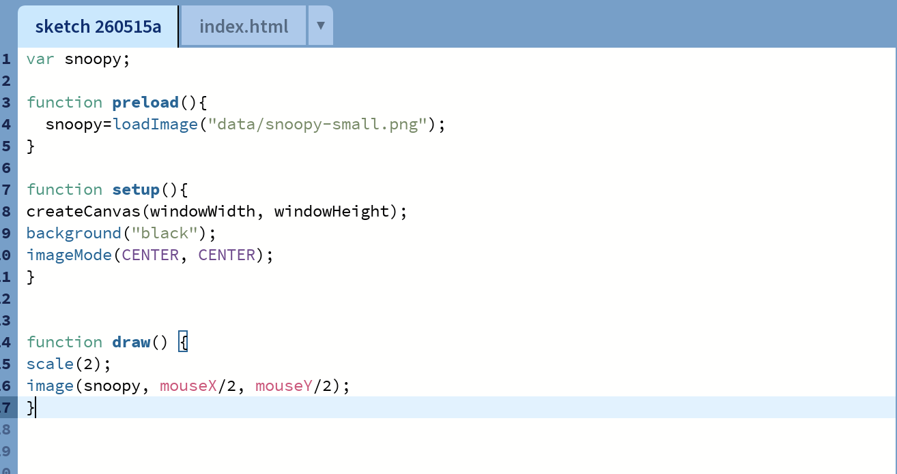


webcamEffects.js
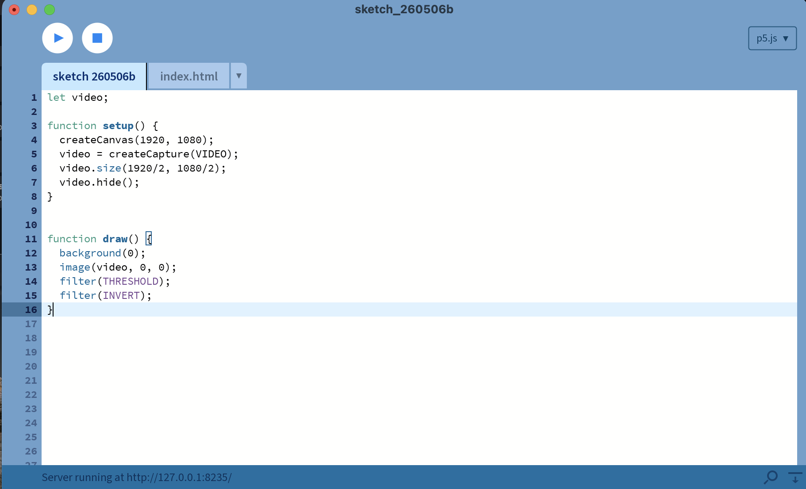
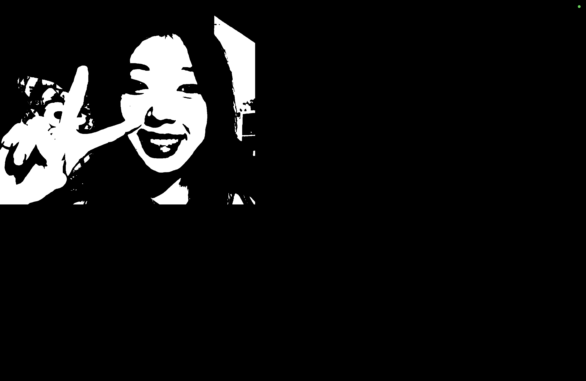
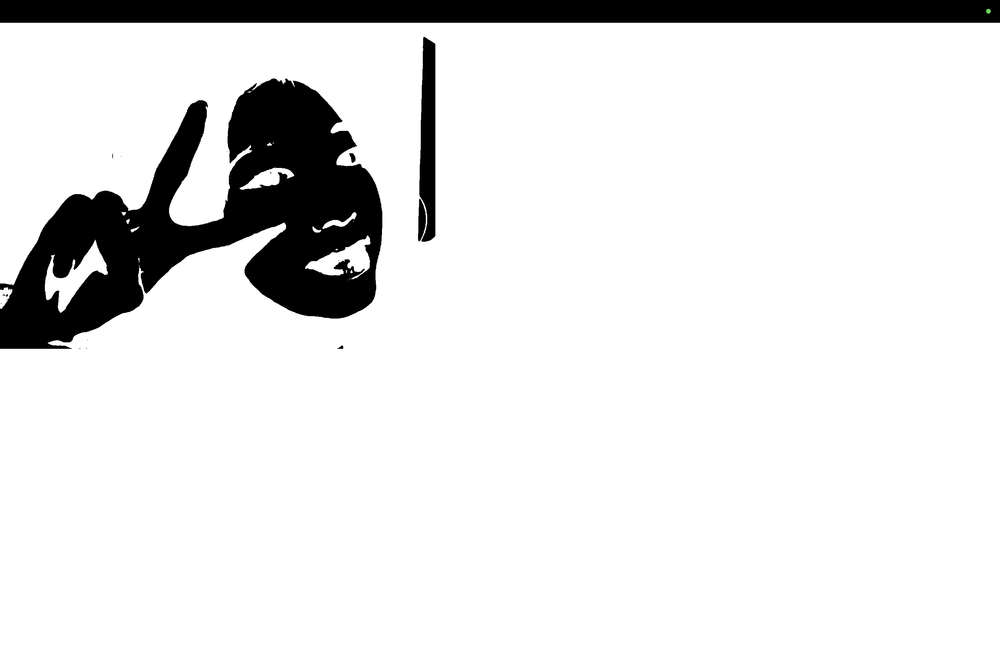